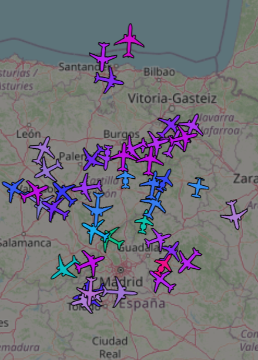
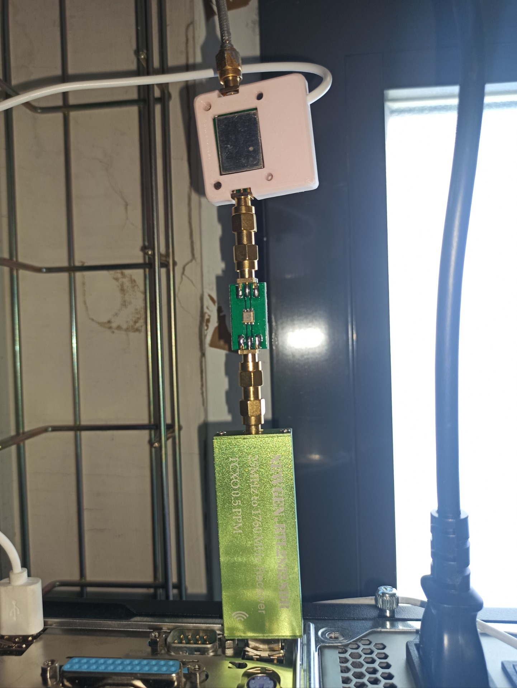
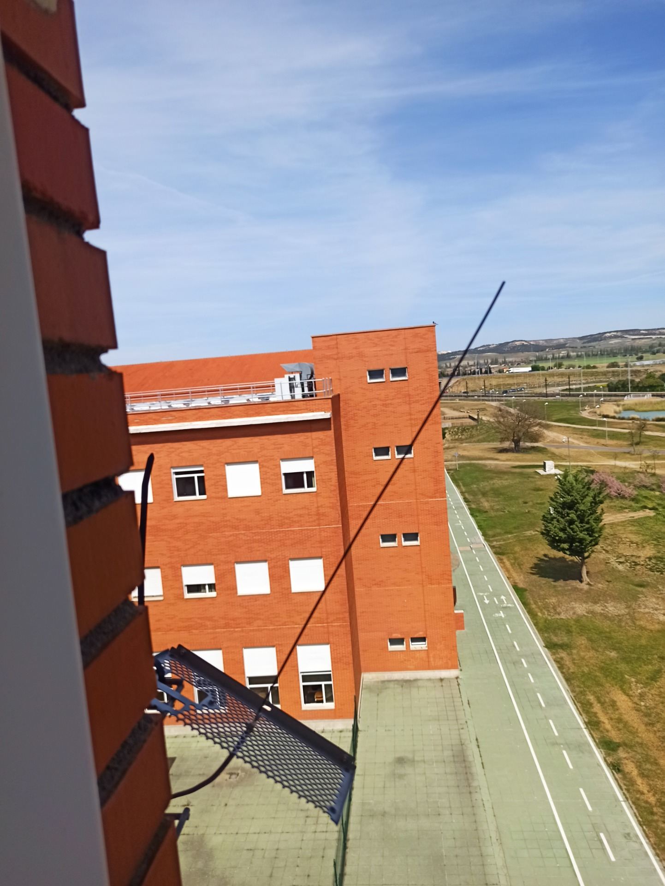

Espacio reservado para servidor SDR: se mete a mano en HTML cuando se exporte la página Explicaciones debajo



Receptor ADSB con SDR
Llevado a cabo principalmente por David LLorente
Con toda la estructura de un receptor, la cabecera analógica, antes de la SDR cuenta con un LNA (Amplificador de bajo ruido), un BPF (o filtro paso banda) de 1090MHz, y una antena calculada para λ/2 con plano de tierra.
La estación está motorizada, y cuenta con dos antenas para 144/430MHz (downlink y uplink) que permite comunicación con satélites. A mayores dispone de una parabólica para otros usos. Eventualmente trackeamos a la I.S.S. y escuchamos algunas de sus comunicaciones
Banda Ciudadana (27MHz) es una banda no licenciada, donde es posible escuchar camioneros, trabajadores en la carretera, o a cualquier otra persona con ganas de transmitir, como nosotros por ejemplo.
NAS
(NETWORK ATTACHED STORAGE)
Para compartir recursos entre nosotros hemos dedicado una VM a montar el NAS. Conseguimos el archivo .vma del servicio y lo restauramos en Proxmox. A diferencia de otros servicios este corre en un dominio ajeno a la universidad y securizado a través de cloudflare. Tiene unos 100GB HDD dedicados, aunque no por mucho tiempo.
Nos gustaría hablar algo más acerca de como tenemos organizada nuestra red, y otros proyectos que han intervenido, pero por cuestiones de seguridad no debemos.
DIPOLO HF
En concreto pensado para la banda de 40m.(7MHz)
Actualmente no disponemos foto del dipolo, aunque es nuestra intención que la haya. Gracias a las propiedades físicas de esta banda (HF -> 3-30MHz) conseguimos propagación ionosférica, y dado que el dipolo se encuentra en horizontal por su tamaño, también contribuye a este efecto al estar la dirección de máxima ganancia apuntando hacia el cielo. Gracias a esto es posible escuchar incluso hasta radio china de noche. Sin irnos tan lejos, mucha gente en España utiliza HF